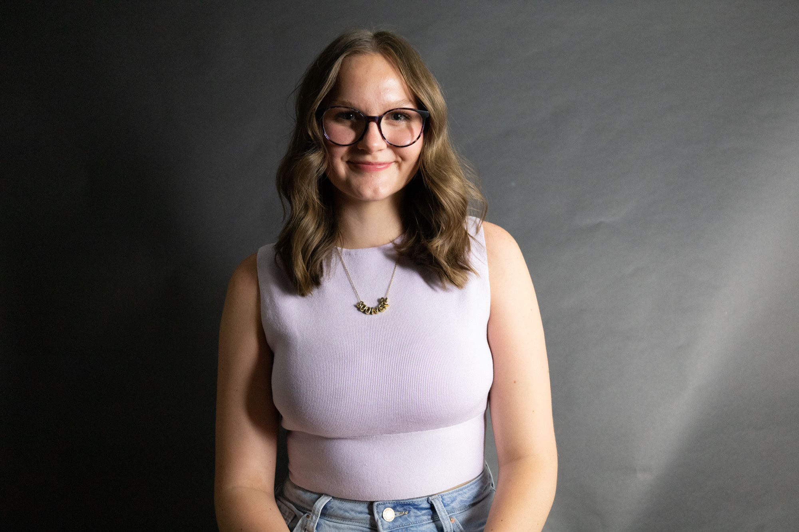

McKenna Worsham
I am a committed student, who also works part time. I will graduate a full
year early in May of 2027 with my Bachelors Degree in Journalism and a
minor in Marketing. I love being involved in any and everything! I am creative
and diligent with my work and hope to work in News Production!
Skills
- Leadership Loyalty
- Friendly Hardworking
- Responsible
- Team player
- Community service
- Team Management
- Social media understanding
- Communication
- Patience and empathy
- Problem-solving
- Time management
- Strong work ethic
- Reliability
- Dependability
Education
- Bachelor's of Journalism and Communications: Marketing
University of Oklahoma, Norman, OK
I plan to graduate in three years (2027) with my Bachelor's degree in Journalism and a minor in Marketing, hoping to pursue a career in broadcast news production!
- May 2024 - High school diploma
Owasso High School, Owasso, OK